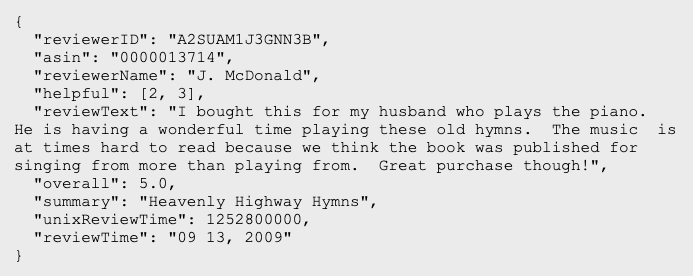

import requests #Importing requests library for api-based retrieval
import warnings
warnings.filterwarnings('ignore')Data Collection
Overview
The data from this project is open source and available via a GitHub repository. A very big thank you to the repo owner, Jianmo Ni, who is a former UCSD student that compiled over 233.1 million Amazon reviews for their paper on recommendation systems.1
The repo owner offers this data to the public under one condition - that anyone who uses it cites their original work, which I have included in the references section below. Alternatively, this link will take you directly to the original paper that used this data. The raw data used in this report can be downloaded at the original repo.
Due to limited storage and computational capacity, I have elected to only conduct my analysis on the “5-core” version of Amazon Electronics reviews within the repository. The raw data is in JSON format, and therefore needs to be parsed and stored in a dataframe before any modeling or EDA can be done. For this process, I use the parse() and getDF() functions defined in the repository which is linked above.
In case you are not familiar, the term “5-core” is in reference to dense subsets, and in this case it means that the data below has been filtered such that the remaining users and items have 5 reviews each.2
Data Structure and Format
Before we begin collection and cleaning, here is an example of a single JSON object contained in the raw data file:

Source: The repo above
Within this dictionary, we observe the following characteristics:
overall: Ratingvote: Amount of community votes given to the review. Users will often vote when they find a review helpfulverified: Boolean variable that indicates whether an account is verified or notreviewTime: Timestamp of the reviewreviewerID: ID of the reviewerasin: Id of the productstyle: Key-value object. In this case, describing product attributesreviewerName: Name of the reviewerreviewText: Raw, unprocessed text contents of the reviewsummary: The title of the user’s reviewunixReviewTime: Time of the review in unix time (Measures time “based on the number of non-leap seconds that have elapsed since 00:00:00 UTC”)3.image: Image path (if any)
The raw dataset contains a total of around 6.7 million of these entries (one for each review).
Code
API-Based Data Retrieval Using requests Library
The following code uses an API-based retrieval method to download the data directly from the GitHub repository. The pull code itself is provided by OpenAI’s GPT-4o Model4. After numerous attempts at debugging and testing the code in another environment, the LLM added a tweak in the code to disable SSL verification. While this ended up working, this is an unsafe practice, and you should always use discretion before trying it in your own analysis.
# Dataset URL
url = "https://jmcauley.ucsd.edu/data/amazon_v2/categoryFilesSmall/Electronics_5.json.gz"
# Output file
output_file = "../../data/raw-data/Electronics_5.json.gz"
# Download the dataset with SSL verification disabled
response = requests.get(url, stream=True, verify=False)
# Check if the request was successful
if response.status_code == 200:
with open(output_file, "wb") as file:
for chunk in response.iter_content(chunk_size=1024):
file.write(chunk)
print(f"Dataset downloaded and saved as {output_file}")
else:
print(f"Failed to download dataset. HTTP Status Code: {response.status_code}")Dataset downloaded and saved as ../../data/raw-data/Electronics_5.json.gzImporting Packages and Loading Data
Here, we begin the process by loading in our data. as stated above, the initial parse() and getDF() functions are borrowed from the link above as well. However, when initially trying to load and parse this data, I ran into serious memory issues that rendered my machine unable to successfully convert the data into a dataframe. Therefore, I elected to use the orjson library over the traditional json, which cut my import time dramatically. For reference to that repository, please refer to this link.
# Importing necessary packages
import pandas as pd
import gzip
import orjson
# Loading in the data
# Defining function that parses the json file
def parse_orjson(path):
g = gzip.open(path, 'rb')
for l in g:
yield orjson.loads(l)
# Defining function to load the json data into a pandas dataframe
def getDF_orjson(path):
i = 0
df = {}
for d in parse_orjson(path):
df[i] = d
i += 1
return pd.DataFrame.from_dict(df, orient='index')
# Retrieving data
df = getDF_orjson('../../data/raw-data/Electronics_5.json.gz')Checking Dimensions
- Now that the data has been loaded, let’s check the shape
# Printing the data shape
df.shape(6739590, 12)- 6,739,590 reviews, which coincides with the count in the original repository.
Zipping Data
- With that out of the way, we can zip up our data and continue on with the process
df.to_csv('../../data/raw-data/ElectronicsReviews.csv.gz', index=False, compression='gzip')Moving Forward
- Now that our data has been successfully collected and loaded, we can move on to cleaning it.
Summary
In this section, I loaded in raw JSON data form containing a corpus of over 6 million Amazon product reviews under the ‘Electronics’ category. Using custom functions defined in the dataset’s source repository, I parsed the data and passed it into a pandas dataframe. As a final step, I zipped the file and moved it into the data/raw-data/ directory.
Challenges
Memory and Processing Bottlenecks
Due to the massive size of the raw data file, I had to try a bunch of new methods to successfully load it in. In the end, I elected to use a refined version of the json package called orjson. Where json is the base python library for working with JSON formatted files, orjson is a third-party library built in Rust, and optimized for procedures that require rapid serialization of large-scale JSON files.
Next Section: Data Cleaning
References
1.
Jianmo Ni, J. M., Jiacheng Li. Justifying recommendations using distantly-labeled reviews and fine-grained aspects. (2019).
4.
ChatGPT, version-4o, OpenAI, may-13, 2024, chat.openai.com.